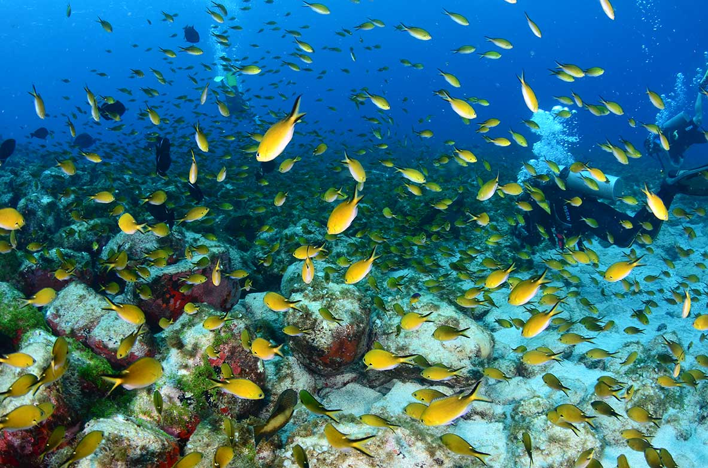
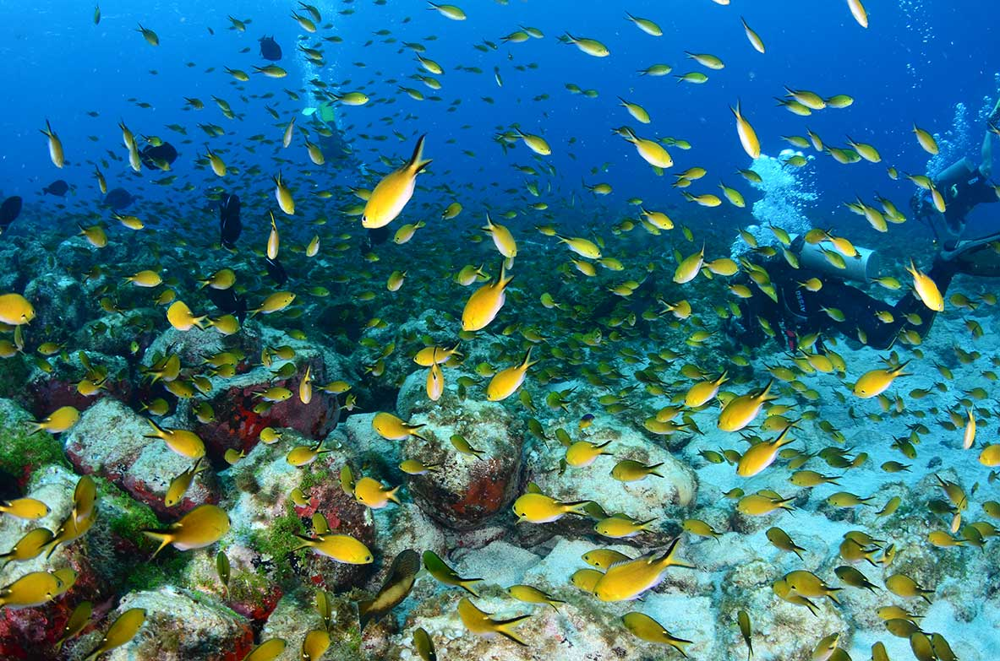

Programação
Passeios
O Ilhatour é o passeio mais procurado de Fernando de Noronha. A bordo de veículos 4x4, percorre-se as melhores praias da ilha e ainda os mirantes da Caieira e do Boldró. Dentro do Parque Nacional Marinho, que exige um ingresso especial, há uma série de trilhas. A mais concorrida é a trilha da Atalaia, que chega a um aquário natural depois de uma caminhada de 45 minutos.
Mergulho
Além de diversos pontos propícios para flutuar com snorkel, Noronha é um dos melhores lugares do mundo para mergulhar com cilindro. Há algumas agências especializadas, com atividades para iniciantes e iniciados. No batismo, um instrutor acompanha individualmente cada mergulhador e desce a uma profundidade de até 12 metros. A atividade é praticada em locais com diferentes formações rochosas e uma visibilidade que pode chegar a 50 metros na horizontal. Peixes coloridos, moreias, tartarugas, lulas, arraias e até golfinhos e tubarões podem dar as caras.
 

Passeio de Barco
O mais tradicional passeio de barco de Fernando de Noronha sai do Porto de Santo Antônio, costeia o Mar de Dentro e vai até a Ponta da Sapata, um dos extremos da ilha. Os golfinhos-rotadores costumam aparecer em diversos trechos do percurso. Na volta, há uma parada de 40 minutos para mergulho de snorkel na Baía do Sancho – outro ponto alto do passeio. Dica: alugue equipamentos de mergulho no porto, antes da partida, para observar a rica fauna marinha.
Projeto tamar
Fernando de Noronha é uma importante área de alimentação e desova para tartarugas-marinhas, principalmente a Praia do Leão. Na sede Projeto Tamar, você aprende mais sobre elas, assim como sobre o trabalho da fundação para protegê-las. Ali há palestras, painéis explicativos e loja com produtos cuja renda contribui com o trabalho de pesquisa e conservação. O espaço cultural eventualmente recebe shows.